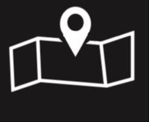

Шаг 1
Название
Описание

Описание
Исследуйте районы, города, озёра и природные достопримечательности Южного Урала. На карте можно искать объекты, запускать тур по области и фокусироваться на одном районе.
Челябинская область — это сочетание горных хребтов Южного Урала, лесов, степей, крупных индустриальных центров и известных туристических мест. Здесь можно совместить карту, историю, природу и маршруты в одном интерфейсе.
Южный Урал, горные массивы, лесостепь и крупные водоёмы формируют очень контрастный ландшафт региона.
Таганай, Зюраткуль, Тургояк, Аркаим, Аракульский Шихан и десятки локальных маршрутов делают область интересной круглый год.
Челябинск, Магнитогорск, Миасс, Златоуст, Кыштым и другие города формируют индустриальный и культурный каркас области.
На сайте объединены полигоны районов, города, озёра, реки, исторические места, поиск и режим тура.
Три ключевые точки, которые визуально и туристически лучше всего представляют Челябинскую область.


Небольшие сценарии, которые помогают быстро понять географию и характер региона.
Таганай → Златоуст → Куса. Подходит для знакомства с уральскими хребтами, лесами и горнозаводской частью области.
Тургояк → Увильды → Чебаркуль. Самые узнаваемые водоёмы региона и идеальный сценарий для красивой визуальной карты.
Аркаим → Игнатьевская пещера → Остров Веры. Маршрут по археологии, легендам и историческим локациям Южного Урала.
На карте отображаются все полигоны из GeoJSON, а также города, озёра, реки и природные объекты. При клике на район активируется режим фокуса: светится только выбранная территория.
Ключевые городские центры Челябинской области — индустриальные, транспортные и туристические.
Наиболее интересные природные и исторические точки для исследования на карте и для будущих маршрутов.
Открой карту, выбери район, запусти тур по области и используй проект как визуальный путеводитель по 74 региону.